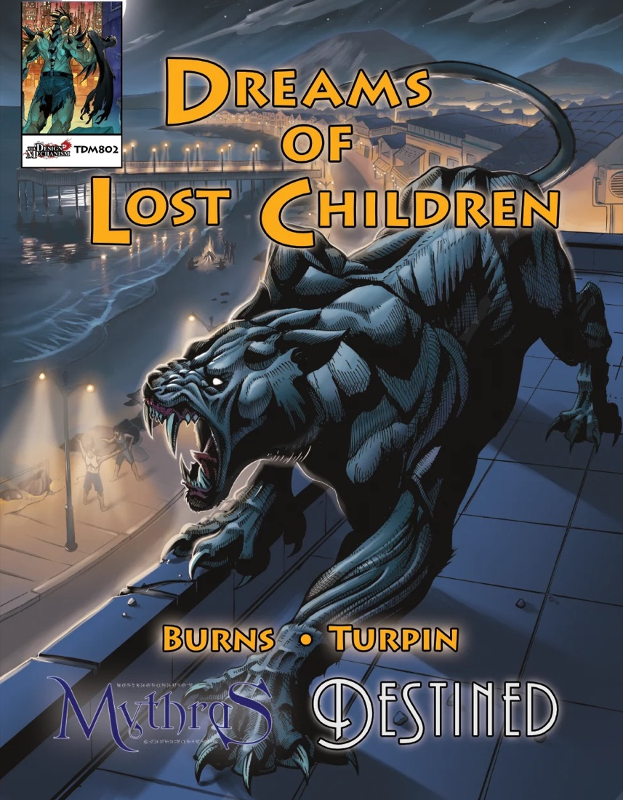
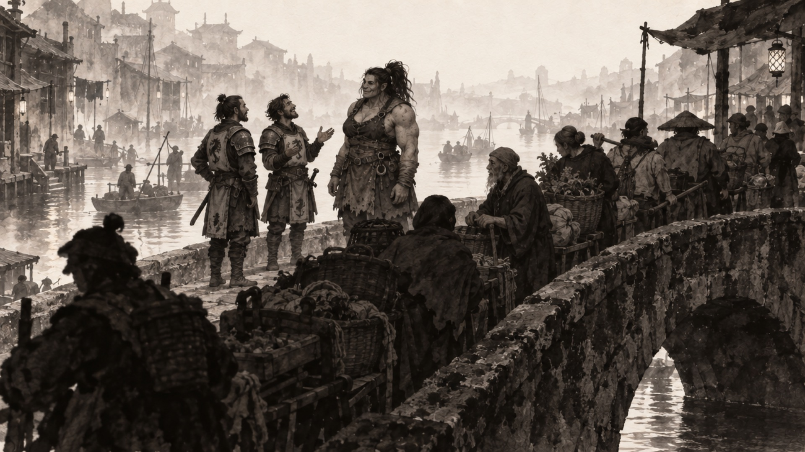
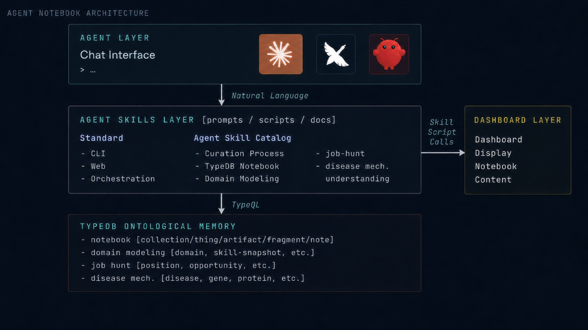
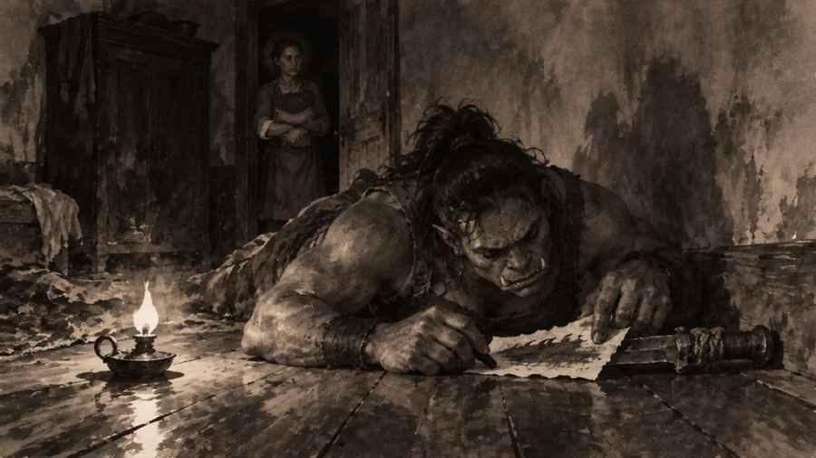
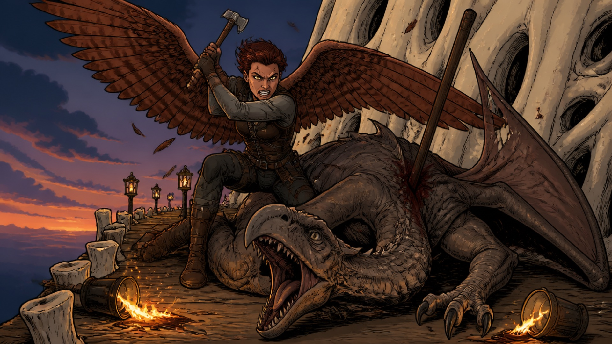

Claude Opus as a
Tabletop Roleplaying Gamesmaster
for the Mythras Imperative Rule Set
Gully Burns · Altos Labs · LLM-Day, Oct 1st
Title
One breath: this is a talk about what it takes to run a role-playing game inside a language model, and the answer turned out to be a world model — a typed, queryable one — with a storyteller's voice on top.
Disclaimer
None of the work in this talk involved Altos Labs in any way. It was done on my own time, on my own hardware, with my own accounts. No Altos resources, data, code, or people were used, and nothing here represents Altos Labs' views, products, or plans.
It is a hobby project about running games, built by someone who wanted to play one.
Disclaimer
Read it plainly. Do not joke over it. Then move on.
About me
- Professionally, I work in the field of scientific knowledge-engineering. Recent work is concerned with 'Agentic Ontological Notebook Memory', forming the basic agent memory framework this talk is built on.
- I have been playing tabletop roleplaying games since I was 10. I develop open source systems and material here: fourth-wall-gaming
- I am a published author. The Design Mechanism just released Dreams of Lost Children (Aug. 25, 2026), a scenario for Destined, a superhero game based on the Mythras system.

About me
Thirty seconds. The two halves of the day are the two halves of the talk: the typed memory comes from the science work, the table craft comes from years of running games. Mention Dreams of Lost Children so the room knows the scenario-writing side is real and not a hobbyist's guess.
Stories transport us. A role-playing game transports us as a participant.
A language model can now be the narrator.
Transportation
One breath. Narrative transportation is the psychologists' name for what a good story does: the reader leaves the room. A tabletop game does the same thing with the reader inside the story as a participant, deciding what happens next. And a language model can now take the narrator's chair. The next slide is the academic footing for that claim.
'Narrative Transportation'
- Narrative Transportation is a psychological measure of how audience members engaged in a story are transported by it. - it is a 15-item questionnaire. Green & Brock 2000
- Narrative Transportation is increased by the primary features of role-playing game: interactivity, user control, perceived contingency, perspective-taking, imagination, mental simulation, spatial presence. Thomas & Grigsby 2024, Table 2
- The field has predicted this medium and not measured it — co-created stories where "the consumer will be the character", via "story prompts provided to AI interfaces". No LLM study among the 95 reviewed. Thomas & Grigsby 2024, §5.3
- Evidence is thin. AI short stories transported readers slightly less than student-written ones (d = 0.21); a plain ChatGPT dungeon master scored 2.67/5 on immersion; a GM with memory and world state beat a prompt-only GM on immersion (N = 12). Appel et al. 2025; Triyason 2023; Jørgensen et al. 2025
- Let's be Careful. Developing highly compelling systems for storytelling could cause harm to some psychologically vulnerable people.
Green & Brock (2000) J. Personality & Social Psychology 79(5):701–721 · van Laer, de Ruyter, Visconti & Wetzels (2014) J. Consumer Research 40(5):797–817 · Thomas & Grigsby (2024) Psychology & Marketing 41:1805–1819 · Appel, Malecki, Messingschlager & Winkler (2025) "I, ChatGPT" Humanities & Social Sciences Communications 12:1892 · Triyason (2023) "Exploring the Potential of ChatGPT as a Dungeon Master" IAIT 2023, doi:10.1145/3628454.3628457 · Jørgensen, Tharmabalan, Aslan, Hansen & Merritt (2025) "Static vs. Agentic Game Master AI" arXiv:2502.19519
The academic footing
Four points, one breath each. Transportation is a validated construct with a scale. The things that raise it are the things a game does by construction. The literature predicted this medium in its own future-research section and has not measured it. And what has been measured is the prompt-only version, with small samples: a small effect against AI-written stories on GPT-3.5, a low immersion score for a bare ChatGPT DM that the author himself says the translation setup depressed, and one within-subjects study where adding a memory agent and world state lifted immersion. Do not oversell it — the honest point is that nobody has measured a GM with a real world model, which is what this talk is about.
Steven Johnson Turned Storybooks into Games
- Johnson, an author and editorial lead on Google's NotebookLM, noticed users using a million-token context window as a RPG campaign notebook
- Johnson wrote prompts that turn any source document into a playable simulation on Gemini 1.5 Pro.
- Three experiments:
- The Ghost Map as a cholera-detective simulation in 1854 London
- The Cuban Missile Crisis, sourced from Wikipedia
- One chapter of The Infernal Machine as a published fingerprint-analysis mini-game
Johnson
This is the cleanest public account of the idea: give the model a source and a long enough memory and it will narrate a world you can act inside. His point that what you put in matters more than the model is the one I build on for the rest of the talk — the question becomes what, exactly, to put in.
Mythras: a complete, mature, realistic, and risky RPG system.
Mythras
Say the four adjectives and move on. The next slide is what they mean.
What Mythras is
- Mature. A system from The Design Mechanism (Nash and Whitaker), published as RuneQuest 6 in 2012 and as Mythras since 2016 — with a lineage that originates with the original RuneQuest of 1978.
- Complete across genres. One core engine runs fantasy, semi-historical worlds (Mythic Babylon, Mythic Rome, Mythic Britain in the Dark Ages, Mythic Constantinople in the fifteenth century) — Jack Vance's Lyonesse, Bryan Talbot's Luther Arkwright, superheroes (Destined), science fiction (M-Space), with community-contributed genres extending the universes of possible play.
- Realistic. Well-developed mechanisms: skills as percentages, opposed and differential rolls, action points, combat styles, hit locations with armor per location, special effects on a won exchange, fatigue, passions that push a roll, several frameworks for magic, superpowers, etc.
- Risky. Combat is dangerous. A single won exchange can cripple or kill outright. It is easy to die in Mythras.
The Design Mechanism · Mythras Imperative and Classic Fantasy Imperative are free under the ORC licence.
What Mythras is
One line per adjective. Mature: this is the RuneQuest lineage, forty-odd years of d100 play, and the current rules are a decade old and stable. Complete: the same engine covers Babylon, Rome, Dark Ages Britain, fifteenth-century Constantinople, Vance's Lyonesse, superheroes, science fiction — which matters here because a world model that only works for one genre is a toy. Realistic: the mechanics are granular enough that the engine can adjudicate rather than the narrator. Risky: people die. That is not a bug; it is why the dice matter and why a GM who cannot arrange an outcome is a feature.
How things happen in Mythras
- Named 'skills' manage capabilities: combat, brawn, stealth, perception, influence, deceit, acrobatics, etc..
- A simple action requires a d100 roll under your skill's score.
- A contested action is two rolls. Both sides roll against their own skill and the higher roll that still succeeded wins.
- Game mechanics exist to permit the Gamesmaster (GM) to adjudicate most situations.
- The point. Every situation is resolved faithfully by the dice. It is a probabilistic model built from a small number of simple rules, whose outcomes compound — and nobody, the GM included, gets to choose them.
She wins outright. He walks under the overhang and never looks up.
She still wins, narrowly — he glances at the dark and sees nothing.
He stops on the stair and looks straight at her.
How things happen
Keep this at the level of a player, not an implementer. Named skills; a simple action is one roll under the score; a contest is two rolls and the higher success wins. Then walk the example on the slide, all three branches — the same Stealth 39 against three different Perception results, and three different scenes come out of it. Then the line: a probabilistic model from simple rules whose outcomes compound and that nobody chooses. That is what makes the next section — a world model — necessary rather than decorative.
A Gamesmaster manifests a world model for players.
The thesis
If the model is not written down, the voice will invent one — a different one each time.
What it's like to play

What it's like to play
Let it run and stay quiet over the premise — the four lines over the picture do the introducing for you. Everything after the picture fades is real play, verbatim: Kag's first morning, three days before the Tourney. Pause / replay on the window; clicking the window also pauses.
What to point at as it goes. The player types one friendly line and gets a scene back — the audience can see how little input buys how much world. The knight who talks is a gift and the one who doesn't is the threat, and the game never says so. The queue is the real story: six carts, nobody let through, nobody told anything — that is the occupation, shown rather than explained.
Then the roll. Kag tries to sell them fish, Commerce 65 — and the answer is the line of the campaign: "Sweetheart, if we had a quartermaster I'd have had a hot dinner in Anminster." There is no supply chain to sell to. They have stopped paying for things. The player learns the shape of the occupation from a joke.
The contested Willpower is the one to narrate out loud: two rolls, both succeed, and the higher one wins by three — which is exactly why he is rattled and still standing. (At the table that smile was played without a roll; this is the contest reconstructed, and the Commerce roll after it is as it happened.)
And the close is consequence, not applause: the younger one fixes her name, somebody in the queue laughs, and by tomorrow she will have been ten feet tall. None of that was scripted — it is what the world does with what she did.
Why a language model alone will not do this
- It needs a rules engine. Dice have to decide, and they have to be able to go badly. A narrator who cannot hurt you is not telling a story, it is agreeing with you.
- It has to show its working. The roll, the target, the grade — stated in the open. You cannot trust an outcome you cannot check, and trust is the whole game.
- It needs a knowledge base with real semantics. Who is where, who knows what, what is still true. Continuity in prose degrades; continuity in a typed graph does not.
- It needs a story that moves. Beats on a clock, and characters with their own intentions, so the context the player is acting in changes whether or not they are looking at it.
- It has to know what to skip. Left alone it will narrate every step of the walk to the door. Filmmakers call it shoe leather; the job is to cut to where something is at risk.
- What it invents, it must keep. A name improvised on Tuesday is canon on Friday — so anything made up at the table has to be written down where the next session will find it.
Why out of the box fails
This is the list of things I had to build, and every one of them came from the game going wrong first. Say them fast — the rest of the talk is these six in detail.
The order matters: the first two are about trust (dice that can hurt you, shown openly), the middle two are about state (a graph, and a world that moves), and the last two are about discipline (cut the shoe leather, keep what you invent). A model out of the box gives you fluent prose and none of these.
Ontological Notebook Memory

Every agent that keeps memory commits to a data model (even if that model is just structured prompt text + responses).
Mythras-GM is based on a game-oriented data model - which I will now describe.
Burns & Groth (2026) Complex Knowledge Curation using Agentic Ontological Notebook Memory. Proc. 1st ACM Conference on Agentic and AI Systems (CAIS '26), San Jose, CA. doi:10.1145/3786335.3813226
Ontological notebook memory
This is the memory architecture the game runs on, and it did not come from games — it came from the science work, and it is the CAIS paper with Paul Groth.
Walk the figure: a skill is a package — instructions, a schema in TypeQL, scripts, and optionally a dashboard. Building it loads the schema into a local TypeDB notebook. Claude Code then speaks TypeQL to that notebook rather than keeping the domain in its head. The claim in one line: every agent that persists memory commits to a data model whether it admits it or not, and the ones that hide it in prose cannot be tested or refined.
If the room is technical and wants evidence, the benchmark from the paper is the thing to say out loud: same corpus, thirteen questions, ground truth computed without an LLM — TypeDB 0.75 / 0.68 / 0.77 against RAG 0.00 / 0.00 / 0.03 on aggregation, absence detection and global ranking. Retrieval does not fail there because it is badly tuned; counting, proving non-existence and ranking are not things a similarity search does. A game needs all three: who else knows this, who was never told, who is closest.
Basic System Architecture
How the skill runs a game
Left to right. The player says what they do, in prose. Claude is governed by the skill files — how to conduct a table, what voice to use, the loop to run — and calls Python for anything with a number in it. Those scripts load the campaign from a GitHub repo, which is just files, and read and write TypeDB.
Four things live in that graph, and the rest of the talk is three of them. The rules are faceted, so a rules question is a query rather than a grep. The lore is the world itself. Placement is who is where and what happens next, on a clock — that is the living world, coming up. And epistemics is what each character knows and how they came to know it.
An Ontological Framework for Stories
The ontology
Walk it left to right. An agenda is a goal held by a named person or faction, on a progress clock. It schedules beats: the concrete things it will produce if nobody interferes, placed in world time with a location and a cast. A beat that fires becomes a journal event, and events make facts true.
Then the two edges that make it a world model rather than a timeline: knows, from character to fact, carrying certainty, source and since; and the feedback arrows — a fact can advance, thwart or activate an agenda, and an agenda can require a fact, so "the Baron acts the moment he sees that face" is computed, not remembered.
Start at the top, though, because it answers the obvious objection. story.md is the plan: the acts, what each one is for, and what each one takes — a loss that does not come back. It holds no scene descriptions; those are in the beats, and if a description is in both, one of them is already wrong. Its act skeleton is parsed into the save and rides on every context call, so the GM cannot forget what the act is for. That is the difference between a simulation and a story: the world moves on its own, but it is moving toward something somebody wrote.
Playing the Game Rewrites the Story
The story is rewritten by the play
Go round the loop once. The story orders the beats. tick brings them due and stages them — onscreen if a PC is there, offscreen otherwise, and offscreen beats roll their own dice. Playing them produces events and facts, and facts move the agenda clocks. Then the arrow that matters: all of that comes back up and rewrites the plan.
The strip underneath is Purewater's real file. Act IV is headed PLAYED, AND IT ENDED EARLY and Act V is TO BE REWRITTEN — THIS IS THE REAL ONE. That is not a failure of planning; it is the document doing its job.
The line to land: what is forbidden is the middle state — play has diverged, the files still describe the old story, and the GM improvises across the gap from memory. That is how a campaign becomes a set of disconnected scenes with a stale document beside it.
Characters: Stats, Personality, & Knowledge
Characters
Left column, top to bottom: a character is a sheet, a card and a status line. The sheet is what the dice read. The card is what the actor reads — seven slots, and the one rule that does the work is that it is about motive and pressure, not accent: give two characters different vocabularies but the same relationship to their own interiority and they converge into one person wearing six costumes. That happened, across three sessions, to six NPCs.
Right column: knowledge deliberately does not live on the character. It is an edge into the single fact graph, carrying certainty, source and when. That is what stops the leak — the model has the whole transcript, but a character only has their edges.
The two lines to land: a believed falsehood is a first-class object, not a GM note; and a debt is a belief plus a feeling, which is why there is no obligations table anywhere in the schema.
Future Gamesmastering with LLMs.
Superhuman
In the plain sense: bookkeeping no human GM has ever been able to do.
How Could This Work Impact Tabletop RPGs
- This must make the hobby better. Many gamers see LLMs as slop that is hollowing out their craft. The only version of this worth building is one that earns its place in that community by (A) making games better, and (B) bringing more people to the hobby.
- Fully populated worlds. The knowledge base will hold as many characters and places as fit on disk. A continuous world, not a staged one so that games play out anywhere in it.
- Text is the cheapest (and, for some, most compelling) world-building medium there is. No art pipeline, no level design, no dialogue trees, no voice cast. Cheap with the focus on story.
- LLM-based GMs solve accessiblity. A frustrating aspect of TTRPGs is finding and scheduling a group - LLM-based Gamesmasters are always available.
An old medium, newly expressed
Four steps, then the shelf. The database does not care whether a city holds forty people or four thousand — what limits it today is that one person wrote them. Text is the cheapest world-building there is, so the marginal cost of another life is an evening rather than a studio quarter.
That is the real argument: the ceiling moves from fidelity to interiority. A character who wants something, believes something false and will not say why costs nothing here, and is prohibitively expensive in a graphics engine — which is why those games reach for spectacle instead.
And then your correction, which is the honest framing: this is not a new medium. Tabletop role-playing has done exactly this for fifty years. What is new is that the world can be held honestly while it happens, and that the table no longer needs five friends and a free Saturday.
Close on what exists: an engine, two open campaigns you can install, and the novel. The plates are from The Short Ledger, generated to the manuscript's own art card — the same pipeline that wrote the chapters.
Mythras-GM @ Fourth Wall Gaming
Mythras-GM system is a Claude-Code Plugin:
# the campaign brings the engine with it
/plugin marketplace add fourth-wall-gaming/mythras-gm
/plugin install purewater@fourth-wall-gaming
/purewater:start
Novelization
A played campaign can be read back out as a book. The journal and player-visible canon come out of the graph, chapters are cut where the story turns rather than where the evening stopped, and a style card pins the voice — Hemingway, Moorcock, or mine (Gully). pandoc and Typst typeset it; Claude generates prompts for illustrations.
- Written the way it was played. Dialogue comes from the play transcript, never the journal summary — a summary carries what happened and almost none of what was said.
- Canon flows one way. Nothing written in the book goes back into game state, so you can keep as many parallel novelizations as you like.


The shelf
Left column is where to go. The studio site: Play is the getting-started walkthrough, Tech is this talk written down, Craft is the answer to the slop objection, and the Gallery puts each piece of art next to the canon it illustrates. My own site has the blog and the RPG writing. The rules are free under ORC, which is what makes an open engine legal rather than merely possible.
Right column is the two worlds, with a picture each. Purewater is the one they have been watching all talk — Kag, the bridge, the ledger. The Veilwrack is the other: no ground anywhere, winged peoples on the husks of dead leviathans, and the wind itself dying. Same engine, completely different physics — which is the genre-breadth claim made concrete.
Finish on the three install lines. It is a plugin, the campaign brings the engine, and you are in a scene inside a minute.
Close
Back to Johnson. He said the winners will be the ones with the most artfully curated contexts. Running a game taught me what the curation has to look like: a schema for what can be true, who was there, who knows it, and what happens next — and an agent disciplined enough to keep the numbers on its own side of the wall. Stop at twenty. Questions.